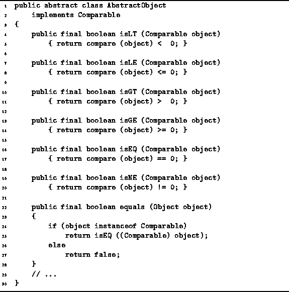
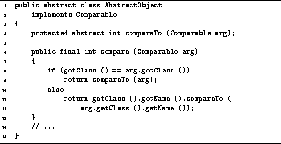

Data Structures and Algorithms
with Object-Oriented Design Patterns in Java
Data Structures and Algorithms
with Object-Oriented Design Patterns in Java
The abstract class at the top of the class hierarchy
is called AbstractObject.
All the other classes in the hierarchy are ultimately derived from this class.
As shown in Figure  ,
the AbstractObject class implements the Comparable
interface discussed in Section .
,
the AbstractObject class implements the Comparable
interface discussed in Section .
Program shows how the methods
isLT, isLE, isGT, isGE, isEQ, isNE
and equals are implemented.
Notice that all of these methods are declared final.
This means that they cannot be overridden by derived classes.
With the exception of equals, all of these methods
simply invoke the compare method and then interpret
the result as needed.

Program: AbstractObject methods.
The equals method is slightly different because we cannot be sure that the argument passed to equals is an instance of a class that implements the Comparable interface.
The compare method is defined in Program .
Program also defines
the abstract method compareTo.
To understand the operation of the compare method,
consider an expression of the form obj1.compare(obj2).
First, the compare method determines whether obj1
and obj2 are instances of the same class (line 8).
If they are, the compareTo method is called to do the comparison.
Thus, the compareTo method is only ever invoked for
instances of the same class.

Program: AbstractObject class compare and compareTo methods.
If obj1 and obj2 are instances of different classes, then the comparison is based on the names of the classes (lines 11-12). Suppose obj1 is an instance of the class named Opus5.StackAsArray and obj2 is an instance of the class named Opus5.QueueAsLinkedList. Then obj1 is ``less than'' obj2 because StackAsArray precedes alphabetically QueueAsLinkedList.
The use of polymorphism in the way shown gives the programmer enormous leverage. The fact all objects are derived from the AbstractObject base class, together with the fact that every concrete class must implement an appropriate compareTo method, ensures that the comparisons always work as expected.
 Copyright © 1998 by Bruno R. Preiss, P.Eng. All rights reserved.
Copyright © 1998 by Bruno R. Preiss, P.Eng. All rights reserved.